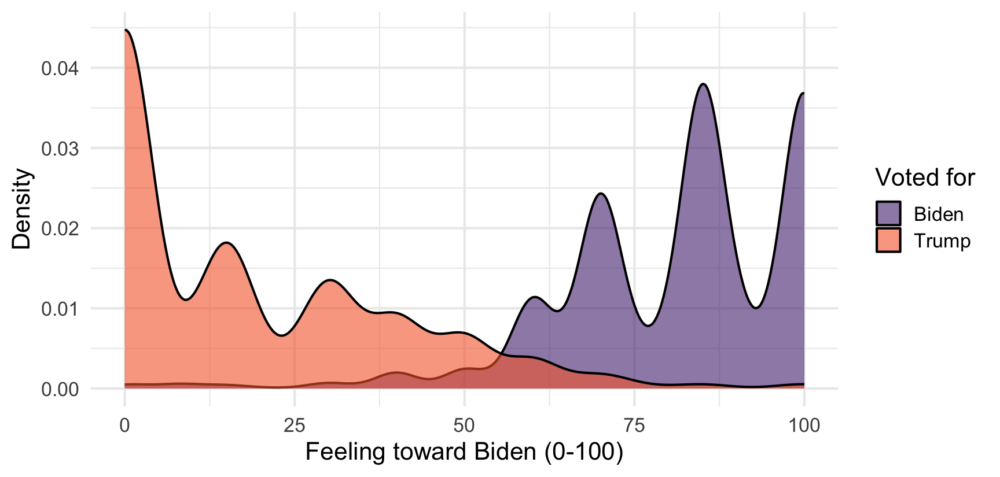

By the end of today you will have:
Survey data loaded on your own machine
Generated a figure
Seen your first error messages + how to deal with them
We are going to do this fast, and slightly out of order
Follow along on your machines. If something doesn’t run, stop me. You won’t be the only one having trouble!
I am going to show you working code before I explain how it works
You may not understand the first thing I show you. That is ok!
By the end of the week, this analysis should make sense
That is a complete analysis: load a tool, load data, pick the rows you want, draw a picture.

Four things, and they are the four things you will do for the rest of your career:
Load a package — borrow someone else’s code
Read a file — get data off your hard drive and into memory
Subset — keep the rows you care about
Plot — look at it
I will walk through this live. Four things to find on your screen:
Console — where code actually runs. Type here for throwaway work.
Editor — where your scripts live. Type here for work you want to keep.
Variables — everything R currently has in memory.
Plots — where figures appear.
Console: disposable. Gone when you close Positron.
Script (a .R file): saved. Reproducible.
Run one line from a script with Cmd/Ctrl + Enter
Rule: if you would be annoyed to lose it, it goes in a script.
Make a folder for this class somewhere sensible
Open that folder in Positron: File → Open Folder
Make a new script: File → New File → R Script
Save it as week2.R inside your class folder
Type 2 + 2, put your cursor on the line, hit Cmd/Ctrl + Enter
Hands up if you did not see [1] 4.
R remembers things when you assign them a name with <-
x now lives in memory. You can see it in the Variables pane.
Names are case-sensitive and cannot start with a number.
Use names that say what the thing is
data2_FINAL is a name you will regret in the future
Create an object called n_states and set it to 50.
Then create an object called n_senators equal to n_states times 2.
A function takes inputs and returns something.
c() means “combine” - it builds a vector, an ordered set of values of the same type.
Base R can do a lot. Other people have written code that does more.
A package is a bundle of that code
Two steps:
install.packages("tidyverse") — once, ever, in the console
library(tidyverse) — every single session, at the top of your script
Don’t put install.packages() in a script you share. It re-downloads the internet on someone else’s machine.
Open a fresh session and try this before loading anything:
Error in read_csv("Data/anes.csv") :
could not find function "read_csv"R does not know what read_csv is
It lives in the tidyverse, and we have not loaded it in this session
could not find function almost always means a missing library()
Load library(tidyverse) at the top of the script, always. Then it works.
Put anes.csv in a Data folder inside your class folder. Then:
Error: 'anes.csv' does not exist in current working directory ('/Users/rwhorne/Dropbox/Clemson/Teaching/POSC_8410/Fall_2026/Slides').This is the most common thing that goes wrong. Let’s understand it.
R always has a working directory — the folder it treats as “here”
When you asked for "anes.csv", you said: look in “here” for a file with that name
There isn’t one. The file is in Data/, one level down.
In Positron, the working directory is whatever folder you opened
So: open your class folder, not a random file, not your Desktop
Then every path you write starts from your folder
This is why we set up the folder!.
Absolute — the full address, from the root of your hard drive:
/Users/whorne/Dropbox/POSC8410/Data/anes.csvRelative — directions from where you already are:
Data/anes.csvAlways use relative paths. An absolute path works on exactly one computer: yours. It breaks for your coauthor, for a replication archive, and on any other device.
You will see setwd("/Users/someone/...") in older code and tutorials
It hard-codes an absolute path into your script
Opening the folder does the same job
POSC_8410/
├── Data/
│ └── anes.csv
├── Scripts/
│ ├── week2.R
│ └── week3.R
├── Output/
│ └── figures/
└── ProblemSets/Raw data goes in Data/ and never gets edited by hand
If you cannot rebuild every number from Data/ + your scripts, it is not reproducible
Download anes.csv from Canvas
Put it in a Data folder inside your class folder
At the top of week2.R, write library(tidyverse)
Below that: anes <- read_csv("Data/anes.csv")
Run both lines
You should see anes appear in the Variables pane with 7,453 rows.
Rows: 7,453
Columns: 7
$ ID <dbl> 200015, 200022, 200039, 200046, 200053, 200060, 200084, 200…
$ state <dbl> 40, 16, 51, 6, 8, 48, 55, 28, 4, 6, 24, 55, 41, 51, 37, 16,…
$ vote <chr> "No", "Yes", "Yes", "Yes", "Yes", "Yes", "Yes", "No", NA, "…
$ votechoice <chr> NA, "Other", "Biden", "Biden", "Trump", "Biden", "Trump", N…
$ ft_biden <dbl> 0, 15, 85, 100, 0, 100, 0, 50, 85, 70, 100, 70, 0, 85, 70, …
$ ft_trump <dbl> 100, 15, 0, 60, 90, 0, 70, 0, 0, 30, 0, 0, 100, 0, 40, 100,…
$ ft_police <dbl> 85, 90, 40, 100, 70, 70, 60, 100, 60, 70, 50, 70, 50, 0, 60…One row per respondent, one column per variable. This data is in tidy format, stored in a dataframe.
<dbl> and <chr>?Those tags are the column’s type, and they decide what you are allowed to do.
<dbl> — a number (“double”). ft_biden, ft_trump
<chr> — text. votechoice, vote
<lgl> — TRUE / FALSE
<fct> — a factor: categories with a fixed set of levels, and potentially order
Warning in mean.default(anes$votechoice): argument is not numeric or logical:
returning NA[1] NA$ pulls one column out of a data frame
The average of “Biden”, “Trump”, “Trump” is not a thing
R warns instead of failing loudly — NA is often your first clue something is wrong
na.rm = TRUE says “ignore the missing values”
Without it, one NA anywhere makes the whole answer NA
R is refusing to guess what a missing value should be. That is what we want it to do!
Using the anes data:
What is the mean feeling thermometer toward Trump? (ft_trump)
How many rows does the data have? Try nrow()
What are the column names? Try names()
What happens if you run mean(anes$ft_trump) without na.rm = TRUE?
Everyone who writes code sees errors constantly. Me included!
An error is not a big deal. It is R telling you it could not do what you asked.
The messages are terse, but they are literal
Read the last line first. That is almost always the actual problem.
| Message | What it means |
|---|---|
could not find function "x" |
You forgot library() |
object 'x' not found |
Typo, or you never ran the line that made it |
does not exist in current working directory |
Wrong folder open, or wrong path |
non-numeric argument to binary operator |
You did math on a text column |
There is no object called anesss
Either you mistyped it, or you never ran the line that created it
Check the Variables pane: if it isn’t listed, R doesn’t have it
Now watch what happens when the column name is wrong:
Warning: Unknown or uninitialised column: `ft_bidenn`.Warning in mean.default(anes$ft_bidenn): argument is not numeric or logical:
returning NA[1] NANo error. A warning and an NA.
R does not know ft_bidenn was supposed to be ft_biden
This is worse than an error, because it will happily flow into your results
Read the last line of the error
Check the obvious: did you load the package? run the line above? spell it right?
?function_name opens the help page
Paste the error into a search engine (or Claude/GPT) — everyone does this, it is not cheating
Ask me
Make sure You Try (3) works. Next class starts with data already loaded.
Read: R4DS Chapter 2 (Data Visualization) — work through it, don’t just read
Read: R4DS Chapter 4 (Data Transformation), sections 4.1–4.3
Thursday: Quarto, the pipe, and data manipulation functions